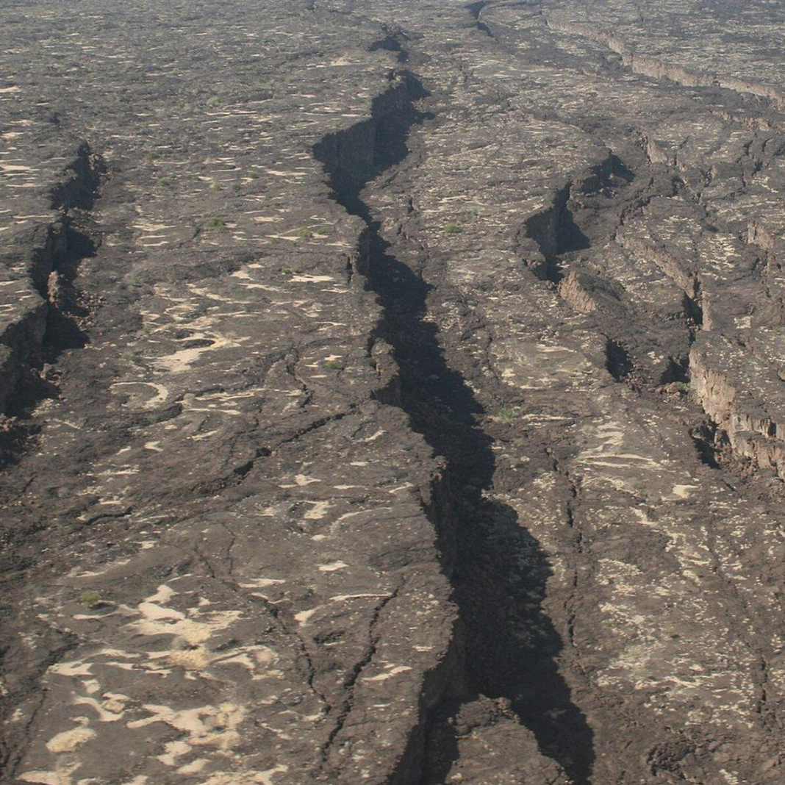

Un planeta en transformación: riesgos y consecuencias
La Tierra es un sistema dinámico. Las placas tectónicas se desplazan, las fallas liberan energía, los volcanes transforman el paisaje y los océanos responden a procesos que se desarrollan bajo su superficie. ¿Qué ocurre cuando estos procesos representan una amenaza para la vida y las sociedades humanas?
La Tierra como sistema geológico mundial
Los terremotos, las erupciones volcánicas, los tsunamis y los deslizamientos no son fenómenos aislados de la dinámica del planeta. Muchos están relacionados con el movimiento de las placas tectónicas, aunque cada uno responde a mecanismos físicos particulares.
Para comprender sus consecuencias debemos estudiar la distribución mundial de las placas, las fallas activas, las zonas de subducción, las dorsales oceánicas y las regiones donde la corteza se está extendiendo o deformando.
Este análisis no parte de la idea de que una catástrofe mundial sea inminente. Su propósito es examinar qué puede ocurrir según los mecanismos geológicos conocidos, qué riesgos pueden encadenarse y qué hipótesis necesitan evidencia adicional.
1. Las grandes regiones de actividad tectónica
El Cinturón de Fuego del Pacífico
Alrededor del océano Pacífico se encuentran numerosas zonas de subducción y límites de placas. Japón, Indonesia, Nueva Zelanda, Alaska y la costa occidental de América forman parte de un amplio conjunto de regiones con elevada actividad sísmica y volcánica.
Las características del peligro varían de una región a otra. Algunas zonas pueden producir terremotos submarinos capaces de generar tsunamis; otras presentan riesgos relacionados con fallas continentales, volcanes o deslizamientos.
El cinturón alpino-himalayo
Desde el Mediterráneo y Turquía hasta Irán, el Himalaya y sectores de Asia meridional, la convergencia entre placas y bloques continentales ha producido grandes cordilleras y sistemas de fallas.
Los terremotos de estas regiones pueden afectar zonas densamente pobladas y terrenos montañosos susceptibles a deslizamientos.
Las dorsales oceánicas
En las dorsales, las placas se separan y se forma nueva corteza oceánica. Allí ocurren terremotos, actividad volcánica y procesos hidrotermales. Gran parte de esta actividad sucede bajo el océano, lejos de las poblaciones.
Los rifts continentales
En regiones como el Rift de África Oriental, la corteza se extiende y se fractura. Estos procesos pueden producir sismos, volcanismo y cambios graduales en la estructura del continente.
Las fallas dentro de las placas
No todos los terremotos ocurren en los límites principales. Algunas fallas se encuentran en el interior de las placas y pueden reactivarse bajo las fuerzas que actúan sobre la litosfera. La distancia respecto de un límite tectónico no elimina el riesgo.
2. Cuando un fenómeno desencadena otros riesgos
Un peligro geológico puede generar consecuencias secundarias. Estas cadenas de acontecimientos son importantes para evaluar el impacto real de un desastre.
Terremotos y deslizamientos
La sacudida puede desestabilizar laderas, provocar desprendimientos de rocas y bloquear carreteras o cursos de agua. La intensidad del movimiento, la geología local, la pendiente y las lluvias influyen en el riesgo.
Terremotos submarinos y tsunamis
Algunos terremotos submarinos desplazan verticalmente el fondo oceánico y generan tsunamis. Sin embargo, muchos terremotos no producen tsunamis. El mecanismo de ruptura, su profundidad y el desplazamiento del lecho marino son factores determinantes.
Erupciones volcánicas y efectos secundarios
Las erupciones pueden producir caída de ceniza, gases, corrientes piroclásticas y lahares. Las grandes erupciones explosivas pueden afectar temporalmente el clima, pero no toda erupción tiene consecuencias climáticas globales.
Infraestructura y redes internacionales
El daño a puertos, carreteras, cables, redes eléctricas y centros de producción puede interrumpir el suministro de bienes esenciales. Un evento regional puede tener repercusiones en otros países cuando afecta redes comerciales o logísticas importantes.
La magnitud de un terremoto describe su tamaño, pero sus consecuencias también dependen de la profundidad, la distancia a los asentamientos, las condiciones del terreno, la calidad de las construcciones y la capacidad de respuesta.
3. ¿Podrían varios grandes desastres producir una crisis mundial?
Sí, es posible que una combinación de desastres regionales tenga consecuencias internacionales. Un terremoto que afecte un importante puerto, una erupción que interrumpa rutas aéreas o un tsunami que destruya infraestructura costera puede repercutir en cadenas de suministro de muchos países.
Una crisis de esta clase no requiere que todas las placas tectónicas se activen al mismo tiempo. Puede surgir de la combinación de daños físicos, interrupciones económicas, dificultades logísticas y una respuesta insuficiente.
Sin embargo, no debemos suponer que terremotos ocurridos en continentes distintos están conectados causalmente. Para establecer una relación se necesita evidencia geofísica, temporal y espacial específica. La coincidencia de varios eventos no basta para demostrar la existencia de un único proceso global.
4. ¿Puede la Tierra desprenderse o partirse?
La separación de los continentes
Los continentes pueden separarse cuando las fuerzas tectónicas extienden y fracturan la litosfera. Este proceso puede crear nuevas cuencas oceánicas y reorganizar la geografía mundial a lo largo de millones de años.
Una transformación geológica extrema
Una actividad tectónica intensa puede modificar paisajes, levantar cordilleras, abrir cuencas y causar grandes pérdidas humanas. También existen escenarios de grandes erupciones y terremotos que pueden afectar regiones muy extensas. Su probabilidad y sus consecuencias deben evaluarse por separado.
La desintegración física del planeta
No existe evidencia de que la Tierra esté próxima a romperse en fragmentos por la actividad tectónica. Los terremotos son rupturas localizadas de rocas y desplazamientos de fallas; no constituyen un mecanismo conocido de desintegración del planeta.
La corteza puede fracturarse y los continentes pueden separarse. Eso es diferente de que el planeta entero se desprenda o se desintegre. Para sostener una hipótesis de esta última clase se necesitaría un mecanismo físico y evidencia que actualmente no tenemos.
5. ¿Qué podemos concluir de la actividad reciente?
Los registros sísmicos permiten estudiar la distribución, la magnitud, la profundidad y la frecuencia de los terremotos. Para determinar si una región presenta una variación significativa, los científicos comparan las observaciones con los catálogos históricos, teniendo en cuenta la cobertura instrumental y las limitaciones de los datos.
Un aumento temporal de terremotos registrados no demuestra, por sí solo, que se aproxima una catástrofe mundial. Los terremotos pueden formar secuencias locales, réplicas o enjambres sísmicos, pero una conexión entre regiones lejanas requiere evidencia específica.
La ciencia puede estimar el peligro en determinadas zonas y desarrollar sistemas de alerta para ciertos fenómenos. No puede predecir con certeza la fecha, la ubicación y la magnitud del próximo gran terremoto.
6. Registro mundial de terremotos recientes
Esta tabla consulta el catálogo global del Servicio Geológico de Estados Unidos (USGS). Muestra hasta 30 eventos de magnitud 4,5 o superior registrados durante los últimos siete días. El umbral permite concentrarse en eventos de mayor magnitud, pero no incluye todos los terremotos del planeta.
| Fecha y hora (UTC) | Magnitud | Profundidad | Ubicación | Fuente |
|---|---|---|---|---|
| Consultando el catálogo oficial... | ||||
Las fechas se muestran en tiempo universal coordinado (UTC) para facilitar la comparación internacional. Los datos pueden revisarse cuando llegan nuevas mediciones. Consulta la ficha oficial de cada evento para obtener sus detalles.
Este registro es una herramienta de observación, no un sistema de predicción de terremotos. Los eventos que aparecen en la tabla no deben interpretarse automáticamente como parte de una secuencia mundial conectada.
7. Fuentes oficiales para el seguimiento mundial
- USGS: Mapa mundial de terremotos y feeds de datos sísmicos .
- EMSC: Centro Sismológico Euromediterráneo , con información sobre eventos sísmicos internacionales.
- NOAA Tsunami Warning Centers: avisos y seguimiento de tsunamis .
- Global Volcanism Program: información científica sobre volcanes del mundo .
Los organismos nacionales también pueden proporcionar información más detallada de sus territorios. Sus datos complementan los catálogos mundiales y deben identificarse con su fuente y fecha.
Un planeta activo
La Tierra cambia continuamente. Las placas se desplazan, las fallas liberan tensión, los océanos se abren y se cierran, y los volcanes transforman la superficie. Estos procesos pueden producir catástrofes regionales y repercusiones internacionales.
Para sostener una conclusión sería necesario demostrar un mecanismo global que explique las observaciones, y no existe evidencia científica suficiente para hacerlo.
El análisis debe continuar con datos verificables, comparaciones históricas y modelos geológicos. La gravedad de un escenario no sustituye a la evidencia de que ese escenario esté ocurriendo.